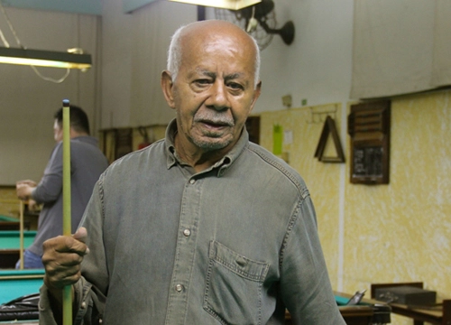
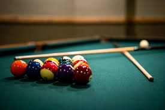
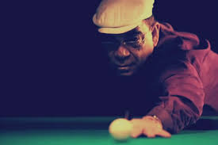
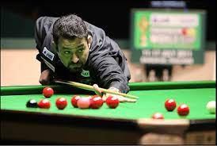
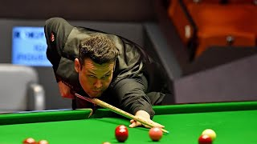

Principais Jogadores da Sinuca Brasileira
1º Carne Frita – Walfrido Rodrigues dos Santos

Talvez um dos maiores nomes na história da nossa sinuca! Praticamente uma lenda viva, no
apogeu a fama o precedia, percorrendo o território nacional de boca em boca, vez que a imprensa não
tinha interesse em divulgar a sinuca, então ainda tida como esporte de malandro. Nos salões seu nome era
tão admirado e respeitado quanto temido pelos adversários
2º Jesus Gabriel Sanches

Embora não temos imagem não podemos esquecer, o
Paulista de Uchoa, foi proprietário do Palácio dos Bilhares, famoso salão de São Paulo, capital,
freqüentado pelos maiores nomes da sinuca nacional. Ainda que dividindo o seu tempo com outras
atividades profissionais paralelas, foi jogador famoso e respeitado, superando a centena de títulos
conseguidos, entre eles duas vezes como campeão brasileiro.
3º Rui Chapéu – Rui Mattos Amorim

Baiano de Itabuna, foi um dos grandes jogadores na
história recente da nossa sinuca, marcando seu nome e firmando-se no conhecimento do público por meio da
TV, que então iniciava as transmissões dos grandes eventos ou campeonatos especiais da sinuca.
Desenvolveu técnica esmerada, com um perfeito toque de bola, e destacava-se entre os melhores do Brasil.
Sua marca maior foi a vitória sobre o campeão mundial Steve Davis, quando este aqui se apresentou.
4º Noel Rodrigues Moreira

Paranaense de Roncador, atualmente reside em Curitiba onde
possui um prestigiado salão de sinuca. Além de se dedicar intensamente nos treinamentos, nunca deixou de
dar aulas de sinuca à adultos e crianças, à estas principalmente. Aperfeiçoou bela técnica, inclusive
jogadas de efeitos malabarísticos, que usa nas constantes exibições que faz por todo o Brasil. Possui
grande número de títulos máximos de eventos, entre eles de campeão sul-americano em 1999, jogando em
Lima, Peru, de campeão brasileiro em 2000, diversas vezes campeão paranaense, e muitos outros.
5º Igor Almeida Figueiredo

Carioca, hoje radicado em Minas Gerais, iniciou na sinuca
ainda garotinho, colecionando grande número de títulos. Foi campeão brasileiro em 1996, 1999 e 2005 e é
um dos grandes matadores da nossa sinuca.